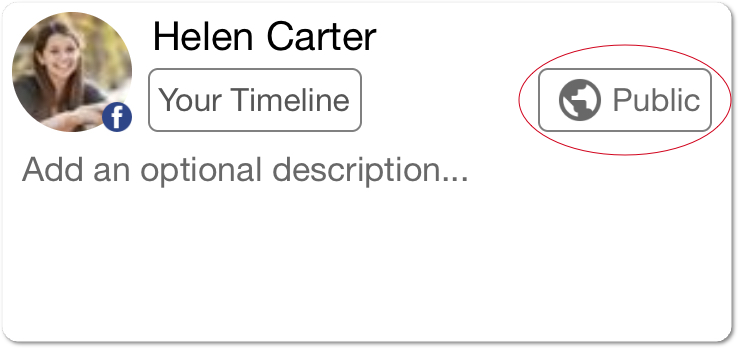

Facebook stream privacy
In LIVE4, your Facebook stream's privacy can be Public, Friends or Private (Only Me)
You can set stream privacy in LIVE4 app:

LIVE4 app privacy permissions
Although, we can not make your stream visible to public audience if you have selected “Only me” visibility in Facebook app permissions.
However, changing visibility permissions works perfectly on downgrading: from “Public” to “Friends”, “Friends” to “Only me”.
So we highly recommend to choose “Public” publish action permission from the very beginning.
Please remember that you can always change it before each stream.
To change the default publish permission: open Facebook via web, go to
Facebook LIVE4 app Settings
and change
App visibility and post audience to “Public”